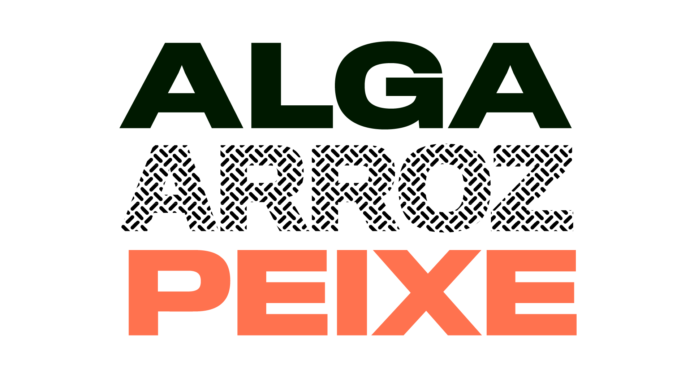
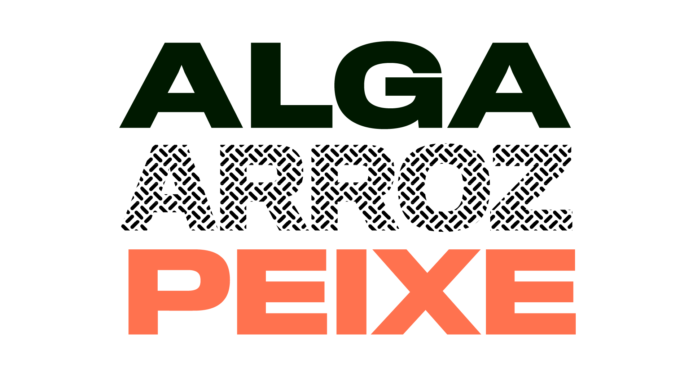
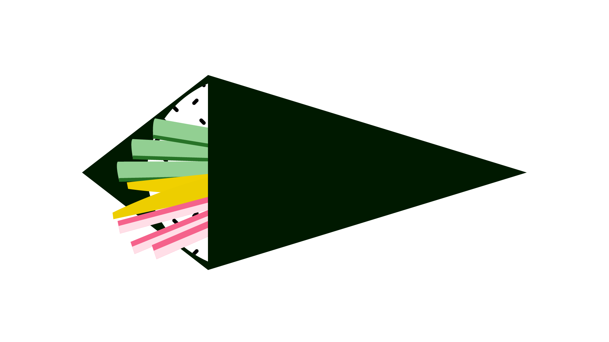
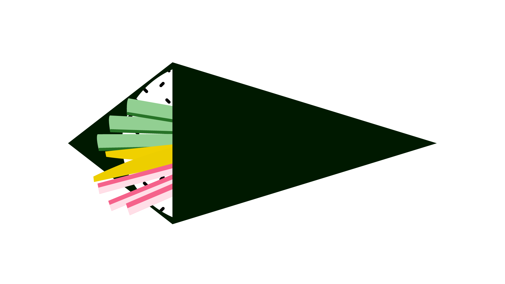
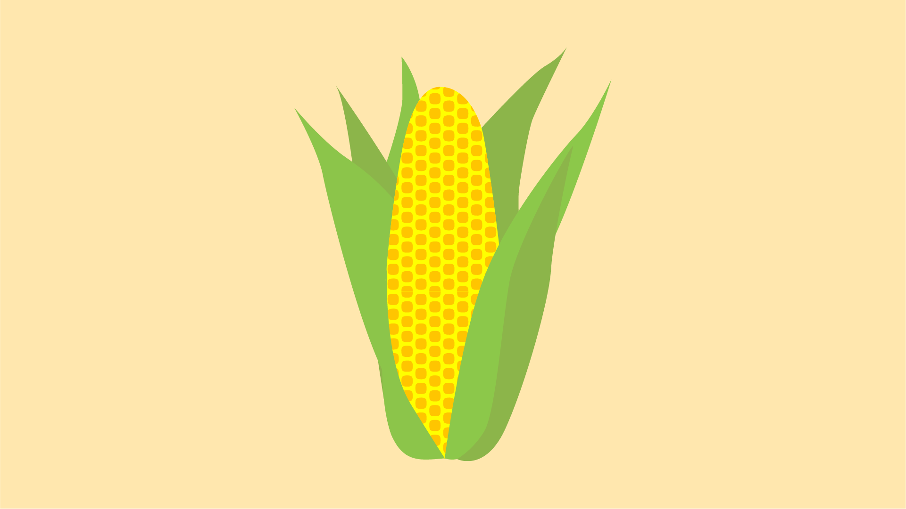
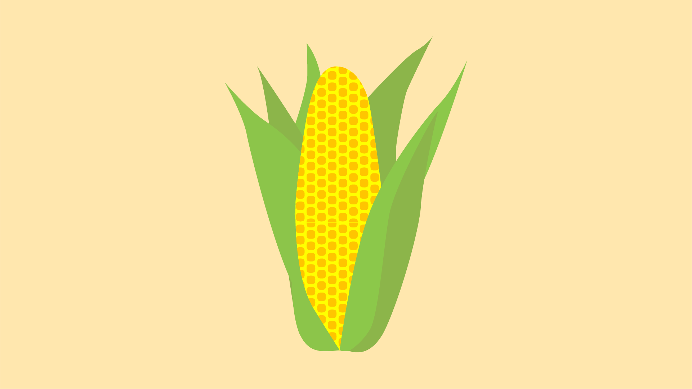

é por quilo – comidas que explicam o brasil
nexo jornal — 2019-2020
"É por quilo – comidas que explicam o Brasil" é uma série de vídeos explicativos que, partindo de uma comida, tratar de um tema específico sociedade e cultura brasileira. Ela parte da premissa que a alimentação é política — e é fortemente influenciada pela economia, migração, religião e história do país.
identidade visual
Foi criada uma identidade visual para a série, que fosse flexível e se adaptasse a todos os temas. Os principais elementos da identidade são as cores base laranja e amarelo — e os grandes textos coloridos em diferentes pesos, compostos na tipografia Titling Gothic.

Telas com as marcas do projeto, presentes em todos os episódios
Para cada comida, foi desenhada uma padronagem que pudesse ser animada, a fim de ocupar os momentos de tela mantendo o movimento no vídeo. As padronagens também compõe as ilustrações que acompanham cada episódio.


Conjunto de telas representando cada comida, desenhadas para o vídeo teaser
temaki
O primeiro episódio da série parte do temaki para explicar a grande difusão de temakerias no país e sua relação com a ascenção de uma classe média consumidora.
 

 

Ilustrações para o episódio sobre o temaki
Modelos de telas para inserção de vídeos, com textura animada ao fundo
farofa
O segundo episódio da série disseca a farofa e sua relação com as origens da sociedade brasileira — o papel da mandioca na alimentação indígena e na produção da farinha, e a introdução do milho na alimentação brasileira.
 


Ilustrações para o episódio sobre a farofa
Modelos de telas para inserção de vídeos, com textura animada ao fundo
vídeos
Foram produzidos quatro episódios da série: temaki, farofa, caipirinha e acarajé — além de um teaser. A série foi interrompida devido à pandemia de covid-19, que impossibilitou as filmagens em locações.
Este projeto foi desenvolvido usando as ferramentas Adobe Illustrator e Visual Studio Code, em conjunto com Sariana Fernández e com direção de Guilherme Falcão